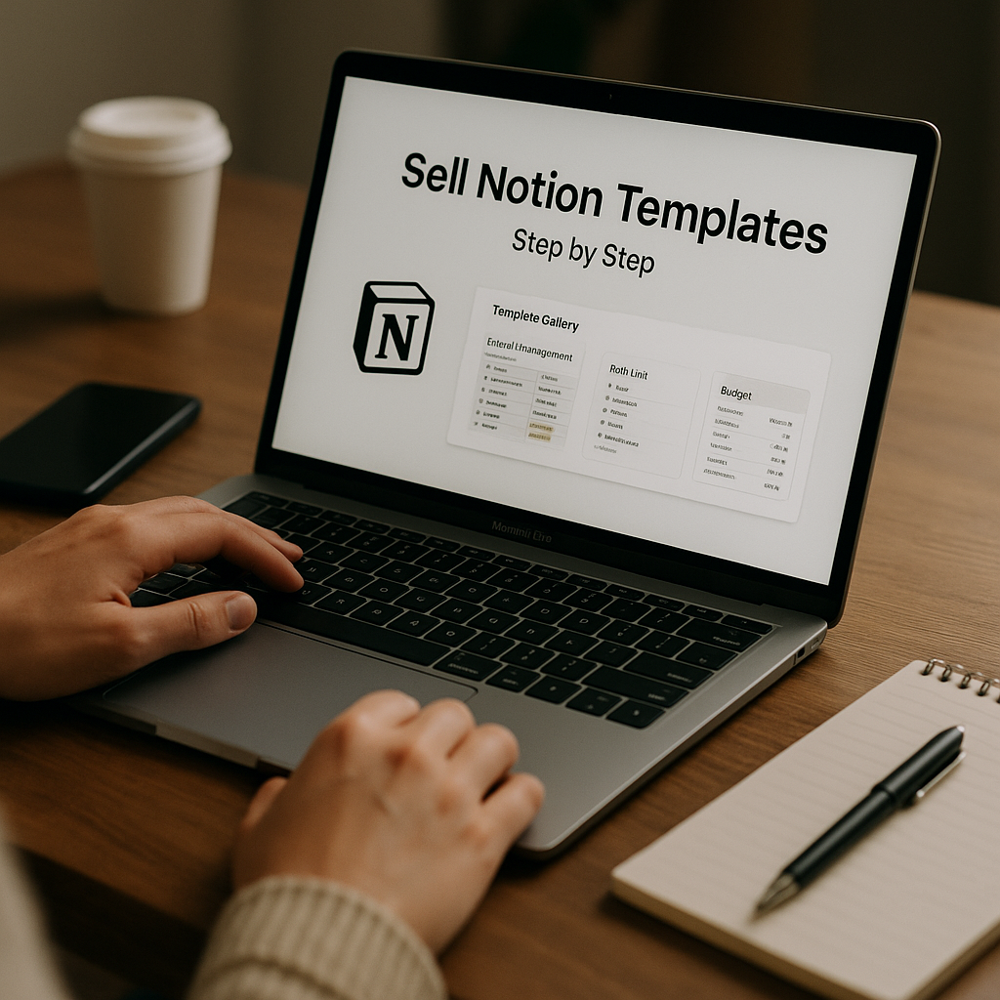
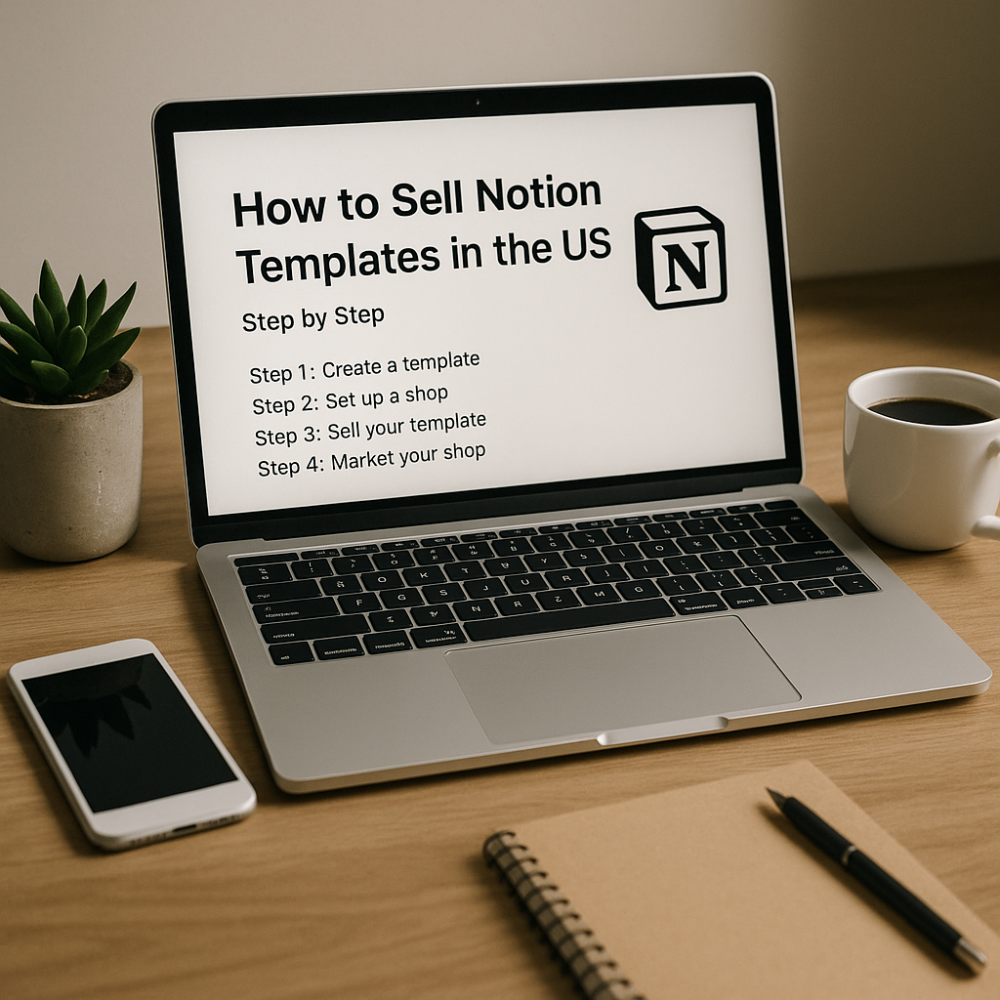

Introduction
If you have a knack for organization and a passion for productivity, creating and selling Notion templates can be a lucrative avenue. Notion's flexible interface allows users to customize their workspace, making it a popular choice for professionals and students alike. Let’s break down the process into manageable steps.
Step 1: Identify Your Niche
The first step in selling Notion templates is to identify a niche that resonates with your skills and interests. Consider areas where you can provide value, such as:
- Project management
- Personal finance
- Goal tracking
- Content planning
- Academic organization
This will help you create targeted templates that appeal to specific user needs.
Step 2: Create Your Templates
Once you have selected your niche, it's time to design your templates. Here are some tips:
- Keep it User-Friendly: Ensure your templates are intuitive and easy to navigate.
- Focus on Design: Use consistent colors, fonts, and layouts to make your templates visually appealing.
- Include Instructions: Provide guidance on how to use your template effectively.
Utilize Notion’s various elements like databases, to-do lists, and calendars to maximize functionality.
Step 3: Test Your Templates

Before launching, it’s crucial to test your templates. Share them with friends or colleagues and ask for feedback. Ensure that all links work, and everything functions as intended. Make adjustments based on their input to improve user experience.
Step 4: Set Up Your Selling Platform
Select a platform to sell your Notion templates. Some popular options include:
- Gumroad: An easy-to-use platform for digital products.
- Etsy: Great for reaching a broader audience.
- Set up a Personal Website: Allowing for complete control over branding and sales.
Ensure your platform enables secure transactions and provides clear information about your products.
Step 5: Price Your Templates
Pricing is crucial. Here are factors to consider:
- Research similar templates to gauge market rates.
- Consider your target audience’s budget.
- Factor in the time and effort spent creating the templates.
A good pricing strategy can enhance sales while providing value to customers.
Step 6: Market Your Templates

Effective marketing is vital to reaching potential buyers. Here are strategies to consider:
- Use Social Media: Promote your templates on platforms like Instagram, Twitter, and LinkedIn.
- Content Marketing: Write blog posts or create videos showcasing how to use your templates.
- Email Marketing: Build a mailing list to keep interested customers informed about new products and deals.
Engage with your audience and ask for their input, making them feel part of your brand.
Step 7: Provide Customer Support
Once you start selling, providing excellent customer support can enhance your reputation and lead to repeat business. Be responsive to inquiries and willing to assist with any issues they may have regarding your templates.
Step 8: Gather Feedback and Improve
After you've made sales, actively seek feedback from customers. Use this insight to refine existing templates and guide future creations. Continuous improvement is key to staying relevant in a competitive market.
Conclusion
Creating and selling Notion templates can be a rewarding venture. By following these steps, you can streamline your process and set yourself up for success. Remember, the key is to deliver value and maintain engagement with your audience.